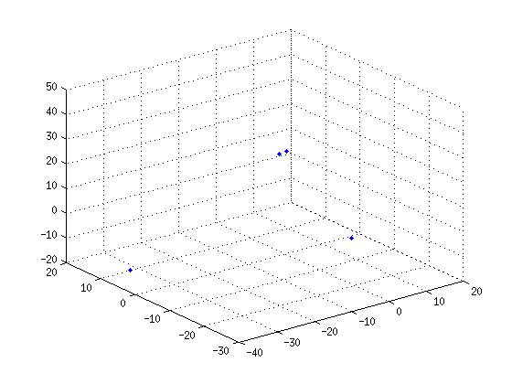
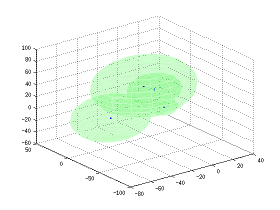
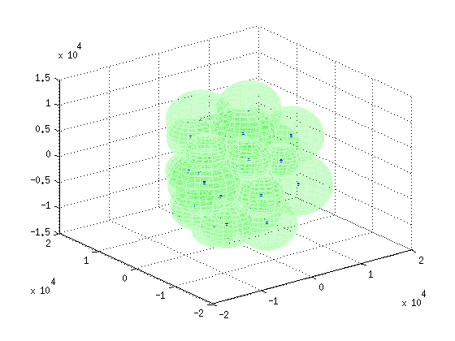
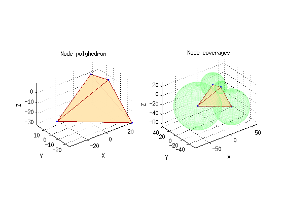

STRETCH_CHAINLINK
Uses a vectorized genetic algorithm to optimize the node configuration for the given base node coverage radii.
Copyright 2014 Sidharth Iyer 246964@gmail.com
Examples:
STRETCH_CHAINLINK([ 12 23 34 45 ]) Optimizes the node configuration for the given node radii in the vector.
STRETCH_CHAINLINK([ 12 23 34 45 ], true) Optimizes the node configuration in a verbose fashion.
See also OPTIM_NODE_CONFIG, CHAINLINK, ATTENUATE
Contents
Function signature
function [ N, V ] = stretch_chainlink(R, verbose)
Input
R: Vector of base node coverage radii
verbose: Boolean flag to specify output verbosity
Output
N(NUM, 3): Optimized node configuration such that row vector N(i, :) = [ Cx Cy Cz ]
V: Polyhedral volume enclosed by N
Check for malformed arguments:
argError = 'Malformed input arguments: Please refer to the source.'; switch nargin case 1 verbose = false; case 2 if ~islogical(verbose) error(argError); end otherwise error(argError); end
Setting genetic algorithm options
min® / sqrt(3) is a conservative setting, ensuring that the cubic diagonal of the initial population range will fit in the lowest coverage radius of all nodes.
'TolFun' set the stopiing criterios based on the average change of fitness function return value.
'PopInitRange' sets the initial population seeding range, within which the first generation is defined using 'CreationFcn'.
'Vectorized' specifies whether the GA is to be called with multiple individuals passed to it in each iteration or not.
HALFRANGE = min(R) / (2 * sqrt(3)); % Center roughly around origin oldopts = gaoptimset(@ga); % Load default options newopts = ... struct( ... 'TolFun', 1e-4, ... % { 1e-6 } 'PopInitRange', [ -HALFRANGE; HALFRANGE ], ... % { [ -10; 10 ] } 'PlotFcns', { @gaplotbestf }, ... % { [] } 'Vectorized', 'on' ... % { 'off' } ); options = gaoptimset(oldopts, newopts); % Overwrite selected parameters if verbose == true options = gaoptimset(options, 'Display', 'iter'); else options = gaoptimset(options, 'Display', 'final'); end
Invoking the genetic algorithm
Maximize CHAINLINK by minimizing the negative of its score:
NUM = numel(R); % Number of nodes objFunc = @(N) -chainlink(N, R, NUM); % Create function handle for GA tic % Start timer % Dump GA return values [ x, fval, exitFlag, output, population, scores ]: if verbose == true [ N, ~, ~, ~, ~, ~ ] = ga(objFunc, 3 * NUM, options) else [ N, ~, ~, ~, ~, ~ ] = ga(objFunc, 3 * NUM, options); end toc % Poll timer
Best Mean Stall
Generation f-count f(x) f(x) Generations
1 400 -1061 -20.96 0
2 600 -1061 -72.32 1
3 800 -2007 153.4 0
4 1000 -4023 526 0
5 1200 -4298 3043 0
6 1400 -4776 2588 0
7 1600 -4776 5760 1
8 1800 -7084 5544 0
9 2000 -7084 1.18e+04 1
10 2200 -7084 1.564e+04 2
11 2400 -8378 1.154e+04 0
12 2600 -8616 1.685e+04 0
13 2800 -8616 1.263e+04 1
14 3000 -9953 1.651e+04 0
15 3200 -1.237e+04 1.828e+04 0
16 3400 -1.237e+04 2.883e+04 1
17 3600 -1.253e+04 2.848e+04 0
18 3800 -1.253e+04 2.883e+04 1
19 4000 -1.253e+04 3.313e+04 2
20 4200 -1.265e+04 4.326e+04 0
21 4400 -1.308e+04 5.758e+04 0
22 4600 -1.313e+04 5.644e+04 0
23 4800 -1.314e+04 6.225e+04 0
24 5000 -1.365e+04 4.716e+04 0
25 5200 -1.365e+04 4.643e+04 1
26 5400 -1.365e+04 4.35e+04 2
27 5600 -1.392e+04 4.675e+04 0
28 5800 -1.402e+04 3.665e+04 0
29 6000 -1.417e+04 3.066e+04 0
30 6200 -1.418e+04 4.261e+04 0
Best Mean Stall
Generation f-count f(x) f(x) Generations
31 6400 -1.449e+04 4.451e+04 0
32 6600 -1.449e+04 4.002e+04 1
33 6800 -1.46e+04 4.169e+04 0
34 7000 -1.467e+04 5.068e+04 0
35 7200 -1.479e+04 5.136e+04 0
36 7400 -1.479e+04 4.878e+04 1
37 7600 -1.479e+04 4.843e+04 2
38 7800 -1.483e+04 5.607e+04 0
39 8000 -1.488e+04 7.669e+04 0
40 8200 -1.488e+04 5.834e+04 1
41 8400 -1.488e+04 7.044e+04 0
42 8600 -1.493e+04 5.746e+04 0
43 8800 -1.493e+04 4.627e+04 0
44 9000 -1.493e+04 4.772e+04 1
45 9200 -1.493e+04 5.356e+04 0
46 9400 -1.493e+04 6.075e+04 1
47 9600 -1.493e+04 6.808e+04 2
48 9800 -1.493e+04 6.482e+04 3
49 10000 -1.496e+04 5.791e+04 0
50 10200 -1.496e+04 5.182e+04 1
51 10400 -1.504e+04 5.477e+04 0
52 10600 -1.504e+04 5.498e+04 1
53 10800 -1.508e+04 3.996e+04 0
54 11000 -1.508e+04 4.847e+04 1
55 11200 -1.508e+04 5.97e+04 2
56 11400 -1.508e+04 7.35e+04 3
57 11600 -1.508e+04 7.351e+04 4
58 11800 -1.508e+04 6.305e+04 5
59 12000 -1.513e+04 8.42e+04 0
60 12200 -1.513e+04 8.01e+04 1
Best Mean Stall
Generation f-count f(x) f(x) Generations
61 12400 -1.513e+04 6.104e+04 0
62 12600 -1.513e+04 5.358e+04 1
63 12800 -1.513e+04 6.243e+04 2
64 13000 -1.513e+04 5.113e+04 3
65 13200 -1.513e+04 4.059e+04 4
66 13400 -1.513e+04 4.657e+04 5
67 13600 -1.513e+04 4.564e+04 6
68 13800 -1.513e+04 4.335e+04 7
69 14000 -1.513e+04 5.377e+04 8
70 14200 -1.516e+04 5.267e+04 0
71 14400 -1.516e+04 5.294e+04 1
72 14600 -1.516e+04 5.745e+04 2
73 14800 -1.516e+04 6.892e+04 3
74 15000 -1.516e+04 5.308e+04 4
75 15200 -1.516e+04 5.112e+04 5
76 15400 -1.516e+04 5.21e+04 6
77 15600 -1.516e+04 5.775e+04 7
78 15800 -1.516e+04 5.844e+04 8
79 16000 -1.516e+04 5.357e+04 9
80 16200 -1.516e+04 6e+04 10
81 16400 -1.516e+04 5.582e+04 11
82 16600 -1.516e+04 4.574e+04 12
83 16800 -1.516e+04 4.097e+04 13
84 17000 -1.516e+04 5.209e+04 14
85 17200 -1.516e+04 4.707e+04 15
86 17400 -1.516e+04 3.449e+04 16
87 17600 -1.516e+04 4.152e+04 17
88 17800 -1.516e+04 3.953e+04 18
89 18000 -1.516e+04 3.902e+04 19
90 18200 -1.516e+04 5.061e+04 20
Best Mean Stall
Generation f-count f(x) f(x) Generations
91 18400 -1.516e+04 5.423e+04 21
92 18600 -1.516e+04 5.434e+04 22
93 18800 -1.516e+04 5.036e+04 23
94 19000 -1.516e+04 5.335e+04 24
95 19200 -1.516e+04 4.957e+04 25
96 19400 -1.516e+04 4.288e+04 26
97 19600 -1.516e+04 4.706e+04 27
98 19800 -1.516e+04 4.944e+04 28
99 20000 -1.516e+04 5.043e+04 29
100 20200 -1.516e+04 4.217e+04 30
101 20400 -1.516e+04 4.504e+04 31
102 20600 -1.516e+04 4.094e+04 32
103 20800 -1.516e+04 3.384e+04 33
104 21000 -1.516e+04 4.816e+04 34
105 21200 -1.516e+04 5.694e+04 35
106 21400 -1.516e+04 4.707e+04 36
107 21600 -1.516e+04 4.538e+04 37
108 21800 -1.516e+04 4.378e+04 38
109 22000 -1.516e+04 5.087e+04 39
Optimization terminated: average change in the fitness value less than options.TolFun.
N =
Columns 1 through 7
11.9289 -13.1240 9.4272 18.0516 19.3170 -2.1702 27.2209
Columns 8 through 12
-25.9486 -32.0166 -39.3285 -8.7900 -15.0803
Elapsed time is 18.046734 seconds.
Processing the genetic algrithm output
Reshape N(1, 3 * NUM) as N(NUM, 3), such that row vector N(i, :) = [ Cx Cy Cz ]
% Workaround for MATLAB's column-major matrix policy:
N = reshape(N, 3, NUM)';
Calculate and map the separation between each pair of nodes:
if verbose == true sep = zeros(NUM, NUM); for i = 1 : NUM - 1 for j = i + 1 : NUM sep(i,j) = norm(N(i,:) - N(j,:)); end end labels = cell(1, NUM); % Row and column headers for i = 1 : NUM labels{i} = strcat('Node', num2str(i)); end sep = array2table(sep', 'VariableNames', labels, 'RowNames', labels) end
sep =
Node1 Node2 Node3 Node4
______ ______ ______ _____
Node1 0 0 0 0
Node2 34.992 0 0 0
Node3 45.999 54.99 0 0
Node4 56.98 65.185 70.782 0
Displaying the 3D representation of the solution
figTitle = [ 'Node configuration optimized for coverage volume', ... ', NUM: ', num2str(NUM) ]; figure('Name', figTitle, 'NumberTitle', 'on');
Use Delaunay triangulation to create and display the tetrahedral mesh for the polyhedral volume enclosed by the node configuration:
DT = delaunayTriangulation(N);
[ ~, V ] = convexHull(DT);
% Plot colours
meshRed = [ 0.666 0 0 ];
faceOrange = [ 1 0.9 0.7 ];
green = [ 0.5 1 0.5 ];
1. Display the polyhedral volume enclosed by N:
subplot(1, 2, 1); scatter3(N(:,1), N(:,2), N(:,3), '.'); hold on; % Continue with current figure tetramesh( ... DT, ... 'EdgeColor', meshRed, ... 'FaceColor', faceOrange ... ); title('Node polyhedron'); xlabel('X'); ylabel('Y'); zlabel('Z'); axis equal; axis vis3d;
2. a) Display translucent spheres depicting the coverage volume of each node:
subplot(1, 2, 2); scatter3(N(:,1), N(:,2), N(:,3), '.'); hold on; % Continue with current figure for i = 1 : NUM r = R(i); [ x, y, z ] = sphere(32); x = x * r + N(i,1); y = y * r + N(i,2); z = z * r + N(i,3); surface( ... x, y, z, ... 'EdgeColor', green, ... 'EdgeAlpha', 0.2, ... 'FaceColor', green, ... 'FaceAlpha', 0.1 ... ); end
2. b) Display the polyhedral volume enclosed by N:
hold on; tetramesh( ... DT, ... 'EdgeColor', meshRed, ... 'FaceColor', faceOrange ... ); title('Node coverages'); xlabel('X'); ylabel('Y'); zlabel('Z'); axis equal; axis vis3d;
Return a volume-optimized configuration for the given number of nodes:
end